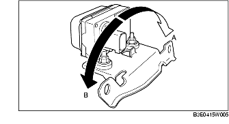
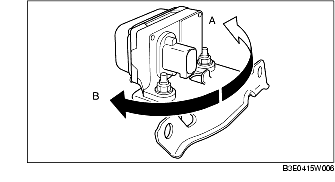

KONTROLL AV KOMBINATIONSGIVARE
B3E041543770W02
1. Stäng av tändningen.
2. Anslut WDS eller motsvarande till DLC-2.
3. Välj följande PID-koder och kontrollera lateral acceleration och girkraft.
-
- LAT_ACCL (lateral acceleration)
-
- YAW_RATE (girkraft)
-
(1) Kontroll av lateral acceleration
-
1) Kontrollera att LAT_ACCL ändras när kombinationsgivaren lutas åt vänster respektive höger.

-
• Byt kombinationsgivaren vid funktionsfel. (Se DEMONTERING/MONTERING AV KOMBINATIONSGIVARE.)
-
Standard
-
När givaren lutas åt höger (A):
-
LAT_ACCL ändras (ökar).
-
När givaren lutas åt vänster (B):
-
LAT_ACCL ändras (minskar).
-
(2) Kontroll av girkraft
-
1) Kontrollera att YAW_RATE ändras när kombinationsgivaren vrids åt vänster respektive höger.

-
• Byt kombinationsgivaren vid funktionsfel. (Se DEMONTERING/MONTERING AV KOMBINATIONSGIVARE)
-
Standard
-
När givaren vrids åt höger (A):
-
YAW_RATE ändras (ökar).
-
När givaren vrids åt vänster (B):
-
YAW_RATE ändras (minskar).